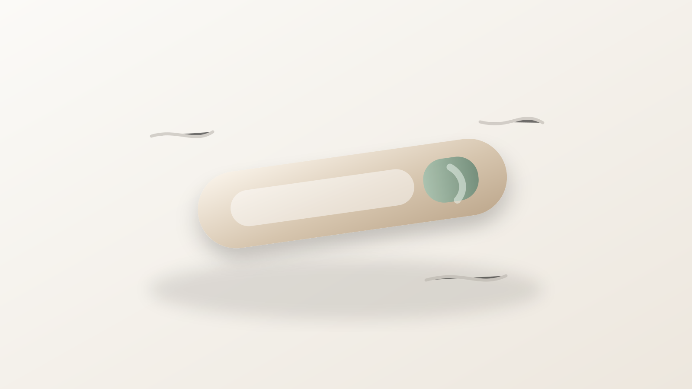
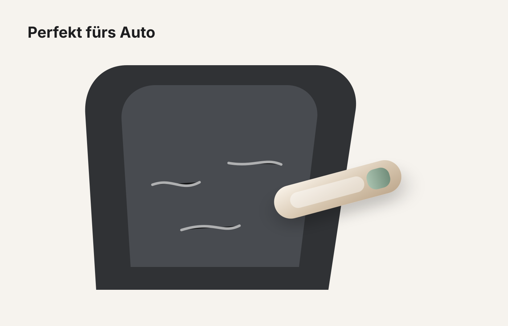
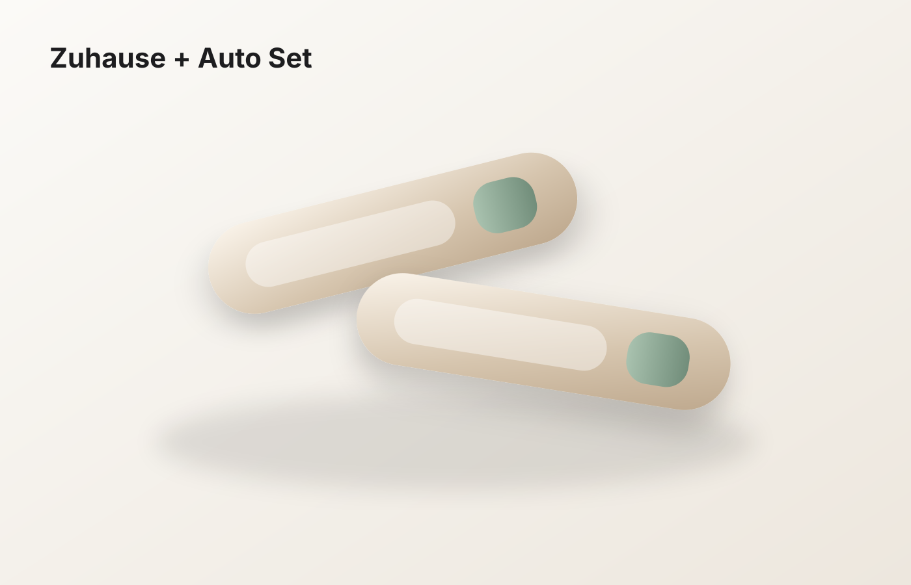
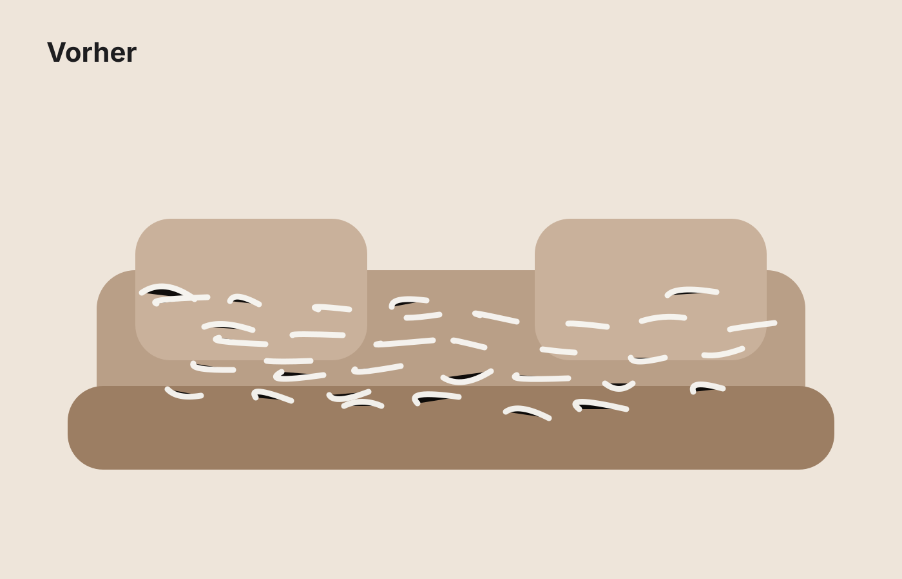
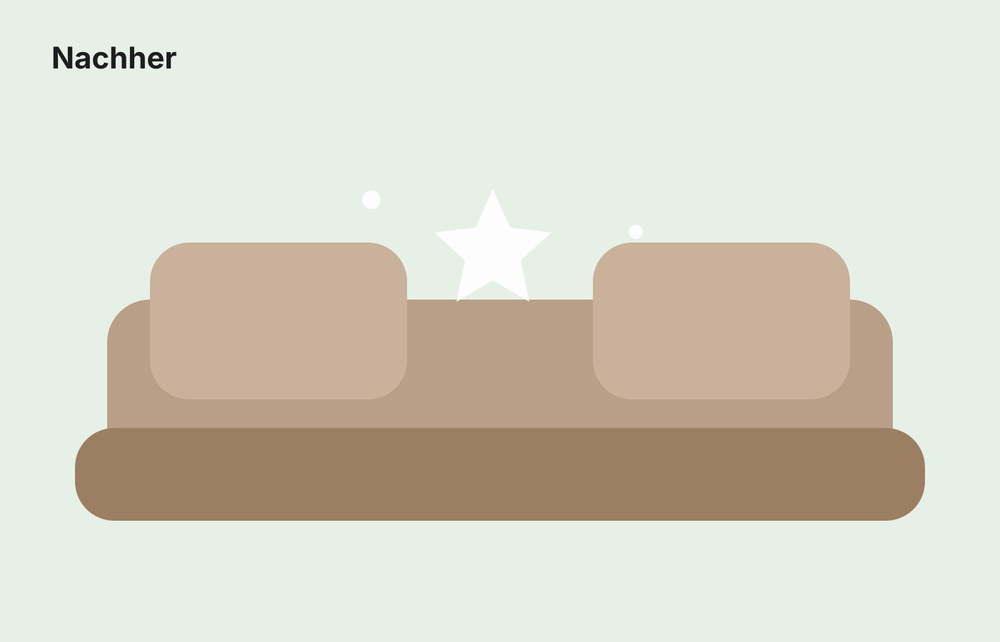

Für Hunde- & Katzenbesitzer
Tierhaare weg. Zuhause sauber.
Der wiederverwendbare Tierhaar-Entferner für Sofa, Teppich, Auto und Kleidung – ohne Batterien, ohne Einweg-Kleberollen.

Warum Fellfrei Zuhause?
Sauberkeit, die man sofort sieht.
Ein kleiner Alltagshelfer für die Stellen, an denen Staubsauger und Kleberollen oft nerven: Sofa, Autositze, Teppiche, Decken und robuste Kleidung.
Sichtbarer Vorher-Nachher-Effekt
Löst festsitzende Hunde- und Katzenhaare von robusten Stoffflächen – ideal für schnelle Cleaning-Routinen.
Wiederverwendbar statt Einweg
Keine leeren Kleberollen, keine Nachfüllpacks. Einfach nutzen, Haare sammeln und entsorgen.
Für Zuhause & Auto
Kompakt genug für Handschuhfach, Flur oder Sofa-Tisch. Ein Tool für die häufigsten Haustierhaar-Probleme.
Produktmedien
Konstante Bildwelt für Shop, TikTok & Reels.
Ich habe eine einheitliche Premium-Medienserie eingebunden: Produktfoto, Vorher/Nachher, Auto-Anwendung, Bundle-Grafik und ein kurzes Demo-Video.


Hinweis: Das sind konsistente, markenfähige Vektor-/Video-Medien für eine saubere erste Shop-Version. Echte UGC-Fotos/Videos vom Musterprodukt sollten später ergänzt werden.
Demo
Von „überall Haare“ zu „bereit für Besuch“.
Die besten Creatives für TikTok & Instagram zeigen genau diesen Effekt: Problem zeigen, 5 Sekunden anwenden, Ergebnis zeigen.


Anwendung
Einfach ziehen. Haare sammeln. Fertig.
1. Fläche glattlegen
Sofa, Teppich, Autositz oder Decke vorbereiten. Bei empfindlichen Stoffen zuerst unauffällig testen.
2. Mit leichtem Druck ziehen
Das Tool über die betroffene Fläche führen, bis sich die Haare sichtbar lösen.
3. Haare entsorgen
Gesammelte Tierhaare aufnehmen und entsorgen. Kein Aufladen, kein Lärm, keine Klebefolie.
Sets
Wähle dein Fellfrei-Set.
Preise als Launch-Struktur für den Shopify-Shop. Checkout wird aktiviert, sobald Shopify/Zahlungsanbieter verbunden sind.
Starter
1 Stück
- Für Sofa oder Kleidung
- Ideal zum Testen
- 14 Tage Widerruf geplant
Zuhause + Auto
2er Set
- 1x Zuhause, 1x Auto
- Besserer Stückpreis
- Perfekt für Haustierbesitzer
FAQ
Kurz beantwortet.
Funktioniert es bei Hunde- und Katzenhaaren?
Ja, der Entferner ist für typische Hunde- und Katzenhaare auf robusten Stoffflächen gedacht.
Welche Oberflächen sind geeignet?
Gut geeignet sind Stoffsofas, Teppiche, Autositze, Decken, Kratzbäume und robuste Kleidung. Nicht ideal sind Seide, Leder, feine Wolle oder beschädigte Textilien.
Ist das Produkt elektrisch?
Nein. Es funktioniert manuell – ohne Akku, ohne Batterie, ohne Aufladen.
Kann es Stoff beschädigen?
Bei normaler Nutzung ist es für robuste Stoffe gedacht. Bei empfindlichen Textilien immer zuerst an einer unauffälligen Stelle testen.